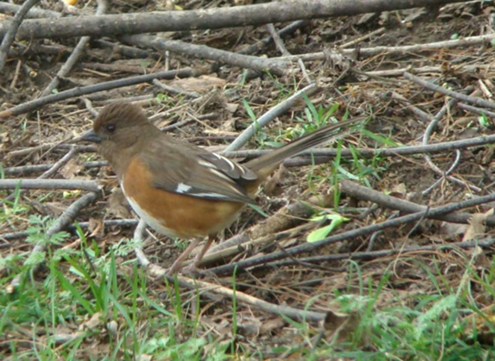

It is an April day as I inspect my untidy backyard through patio doors. A motion catches my eye. Leaves are flying up into the air repeatedly in one spot under a forsythia bush. It is not windy. On closer look, I see an industrious towhee, hopping backward, scratching with both feet, scattering leaves as he searches for insects, seeds or lizards. “I’ve been expecting you!” I think excitedly. I grab my camera and snap several photos through the glass doors before I get a keeper. Towhees are no-nonsense – always in motion.
Towhees migrate southward for the winter, and I seem always see only a male or a female when they return in the springtime – not the two together. The towhee is a somewhat shy bird, a bit smaller than a robin. The males have a black head, throat and back and beautiful orangey sides and white breast. The long tail is white-tipped. Because of their unique coloring they are easily identified. The female is brown where the male is black, but she has the same rather disconcerting reddish-brown eye iris as does the male. The southern towhees may have white irises.
You will be fortunate to have this timid bird come to your feeding station for cracked corn or sunflower seeds. They prefer to feed on the ground, pouncing and scratching not only for the seeds but for any insects that may lurk about. They will fly away at the least sound or disturbance.
The male towhee arrives in the spring and declares his territory with a long song: “drink your tea!” He discontinues this song once his territory of 1 ½ - 2 acres is established. Then the pair communicates with a two-note slurred song, which gave it its name - “to-whee.” Some report hearing “che-wink” and know the bird by that name.
I have not had the good fortune to see a pair together; quite likely they migrate further to nest. They are discreet in their courtship and nesting. Courting the female, the male will open and close his wings and spread his white-tipped tail feathers. The pair may have two broods per season, building a new nest for the second clutch. The female constructs the nest - a loose structure of stems, leaves and bark, lined with soft grasses, under bushes or shrubbery. She will lay from four to six lightly brown-speckled eggs. Her coloring blends in so well with surroundings, you might walk very close to the nest without seeing it. If predators approach very closely, she may pretend to be injured and lure it away or spread her wings to shield her eggs or nestlings.
The male may bring food to his mate while she is incubating the eggs, and he may take a turn on the nest to give her a break. Hatching takes place within 10-13 days, and the young remain in the nest for as long afterwards. Raising their young is a challenge to the towhees as they are easy prey for snakes and other predators, and cowbirds find it easy to remove towhee eggs and replace them with their own. A towhee nest has been found to hold as many as eight cowbird eggs!
The fledglings will stay with the family for a while but they soon leave. Towhees are happy to be “loners.” When winter approaches they do not join up with a flock of their own, but they will leave on their own to migrate southward, disappearing overnight. Towhees were listed as game birds for 25 years in North Carolina, as they were blamed for pulling up new corn. National Geographic (Song and Garden Birds) comments this was probably not true.
I welcome this colorful bird each spring and feel blessed to see one briefly capture a photo or two.
